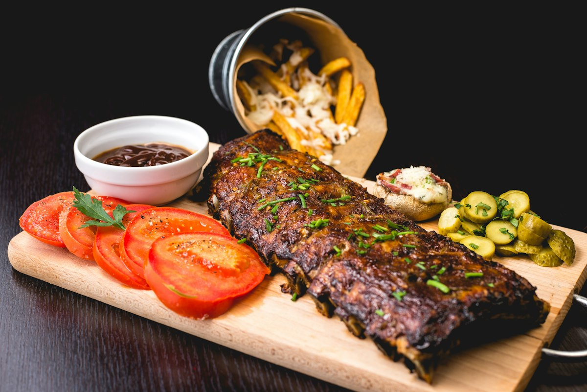
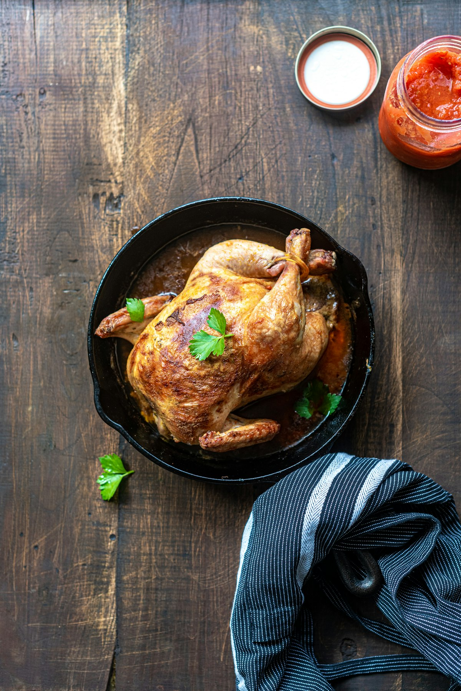
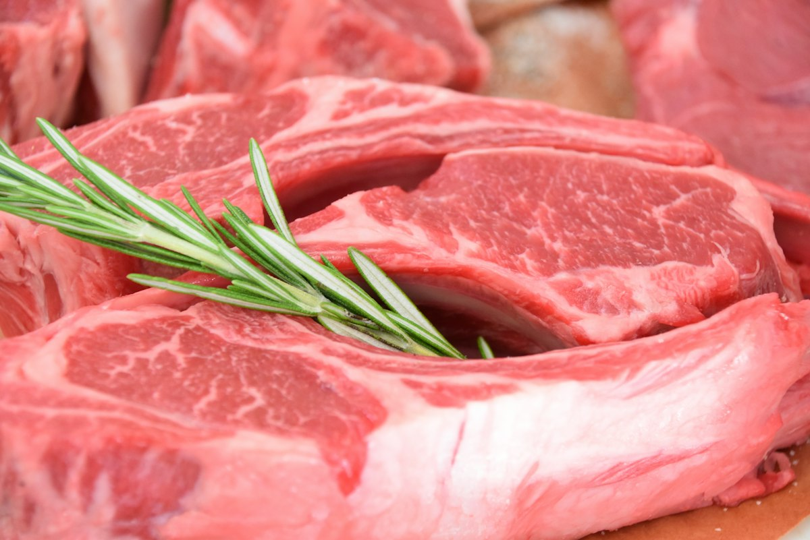

Quality Meat • Carefully Sourced
Quality Cuts.
Honest Sourcing.
Fresh, carefully selected meat prepared by skilled butchers and cut to suit the way you cook.
- ✓ Carefully Sourced
- ✓ Expertly Cut
- ✓ Fresh Quality
Fresh Quality
Checked daily
Carefully Sourced
Trusted selection
Expert Butchery
Skilled preparation
Custom Cuts
Cut your way
Our Selection
Our Meat Selection
Choose from fresh cuts selected for everyday cooking, family meals and special occasions.





Premium Steaks
Premium Steaks
Selected steak cuts prepared for grilling and special occasions.
View ProductsSourcing Standards
Know Where Your Meat Comes From
We believe quality starts before the meat reaches the cutting board. We focus on careful sourcing, proper handling and consistent preparation.
Careful Selection
Meat is selected based on quality and freshness standards.
Proper Handling
Products are handled and stored with food-safety practices in mind.
Skilled Preparation
Experienced butchers prepare cuts according to customer requirements.
Quality Checks
Each order is checked before it reaches the customer.


Quality Promise
Quality You Can See
- 01 —Freshness: prepared with daily freshness checks.
- 02 —Cut Quality: even, clean cuts suited to your recipe.
- 03 —Clean Preparation: hygienic boards, tools and counters.
- 04 —Careful Packaging: packed neatly to keep cuts fresh.
Custom Butchery
Need a Specific Cut?
Tell us how you want your meat prepared and we'll help you choose the right cut.
Thin Cut
Thick Cut
Curry Cut
Boneless
Bone-In
Steak Cut
Minced
Custom Request
Why Customers Choose PrimeCut
Fresh Selection
A focused range of everyday and premium cuts.
Careful Sourcing
Quality-first selection from trusted supply.
Expert Butchery
Skilled hands and clean craftsmanship.
Custom Cuts
Prepared exactly how you cook.
Clear Communication
Straightforward advice and honest service.
Local Service
Pickup and nearby delivery for neighbours.
What Customers Say
"Fresh cuts, helpful staff and excellent preparation."
 Arun KumarRegular Customer
Arun KumarRegular Customer"I asked for a curry cut and they prepared it exactly the way I wanted."
 Priya SharmaHome Cook
Priya SharmaHome Cook"The quality and presentation have been consistently good."
Testimonials shown are illustrative demo content.
Looking for a Specific Cut?
Tell us what you're cooking and how you'd like your meat prepared.